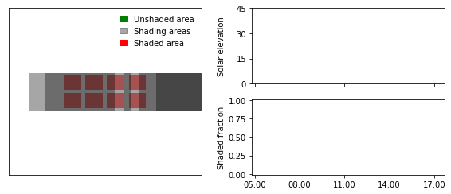

Animation of two-axis tracker shading#
In this blog post I’ll show how to create an animation demonstrating self-shading of a two-axis tracker within a solar collector field.
Spoiler, the animation looks like this:

Shading of two-axis trackers can be simulated using the free and open-source python package twoaxistracking. I developed the package as part of my PhD as there were no free tools available that could achieve this. The package is documented in two journal articles: 10.1016/j.solener.2022.02.023 and 10.1016/j.mex.2022.101876.
First, load the necessary pacakges
import twoaxistracking
from shapely import geometry
import pandas as pd
import matplotlib.pyplot as plt
import matplotlib.patches as mpatches
import pvlib
import imageio
import glob
Define collector geometry#
The collector is defined by two geometries: the total collector areat, which corresponds to the outer edges of the collectors (gross area), and the active collector area, which corresponds to the parts of the collector responsible for power production.
total_collector_geometry = geometry.box(-1, -0.5, 1, 0.5)
total_collector_geometry
active_collector_geometry = geometry.MultiPolygon([
geometry.box(-0.95, -0.45, -0.55, -0.05),
geometry.box(-0.45, -0.45, -0.05, -0.05),
geometry.box(0.05, -0.45, 0.45, -0.05),
geometry.box(0.55, -0.45, 0.95, -0.05),
geometry.box(-0.95, 0.05, -0.55, 0.45),
geometry.box(-0.45, 0.05, -0.05, 0.45),
geometry.box(0.05, 0.05, 0.45, 0.45),
geometry.box(0.55, 0.05, 0.95, 0.45)])
active_collector_geometry

Define field layout#
The field layout used for this demonstration is a hexagonal field layout located on a sloped ground with a tilt of 5 degrees.
tracker_field = twoaxistracking.TrackerField(
total_collector_geometry=total_collector_geometry,
active_collector_geometry=active_collector_geometry,
neighbor_order=2, # recommended neighbor order
gcr=0.3,
aspect_ratio=3**0.5/2,
offset=-0.5,
rotation=90, # counterclockwise rotation
slope_azimuth=180, # degrees east of north
slope_tilt=5, # field tilt in degrees
)
_ = tracker_field.plot_field_layout()
Calculate solar position#
The solar position is easily calculated using pvlib.
location = pvlib.location.Location(latitude=54.97870, longitude=12.2669)
# Generate series of timestamps for one day
timestamps = pd.date_range(start='2021-03-28 05:00', end='2021-03-28 17:45', freq='1min')
# Calculate solar position
solpos = location.get_solarposition(timestamps)
Define plot function#
The following function defines the custom plot, which shows the shading conditions (example below). The main plot (left) shows the unshaded (green) and shaded (red) areas of the reference collector, as well as the projected shadows of the neighboring collectors.
The solar elevation angle and the shaded fraction are plotted continuously on the left.
def plot_shading_conditions(shading_fractions, active_collector_geometry, unshaded_geometry,
shading_geometries, min_tracker_spacing, save_path=None):
# Create plot
fig = plt.figure(figsize=(8, 3.5))
ax0 = plt.subplot(121)
ax1 = plt.subplot(222)
ax2 = plt.subplot(224)
# Create path collections
active_patches = twoaxistracking.plotting._polygons_to_patch_collection(
active_collector_geometry, facecolor='red', linewidth=1, alpha=0.5)
unshaded_patches = twoaxistracking.plotting._polygons_to_patch_collection(
unshaded_geometry, facecolor='green', linewidth=1)
shading_patches = twoaxistracking.plotting._polygons_to_patch_collection(
shading_geometries, facecolor='black', linewidth=0.5, alpha=0.35)
# Plot path collections
ax0.add_collection(active_patches, autolim=True)
ax0.add_collection(shading_patches, autolim=True)
ax0.add_collection(unshaded_patches, autolim=True)
# Set limits and ticks for the main plot
ax0.set_xlim(-min_tracker_spacing, min_tracker_spacing)
ax0.set_ylim(-min_tracker_spacing, min_tracker_spacing)
ax0.set_xticks([])
ax0.set_yticks([])
# Create legend for the main plot
green_patch = mpatches.Patch(color='green', label='Unshaded area')
black_patch = mpatches.Patch(color='black', alpha=0.35, label='Shading areas')
red_patch = mpatches.Patch(color='red', label='Shaded area')
ax0.legend(handles=[green_patch, black_patch, red_patch],
frameon=False, handlelength=1)
# Plot solar elevation
ax1.plot(solpos.index[:len(shading_fractions)], solpos['elevation'].iloc[:len(shading_fractions)])
ax1.set_xlim(solpos.index[0], solpos.index[-1])
ax1.set_ylim(0, 45)
ax1.set_yticks([0, 15, 30, 45])
ax1.set_ylabel('Solar elevation')
# Plot shading fraction
ax2.plot(solpos.index[:len(shading_fractions)], shading_fractions)
ax2.set_xlim(solpos.index[0], solpos.index[-1])
ax2.set_ylim(-0.01, 1.01)
ax2.set_ylabel('Shaded fraction')
ax2.set_yticks([0, 0.25, 0.50, 0.75, 1.00])
# Format xticks
xticks = pd.date_range(start=solpos.index[0].round('1h'),
end=solpos.index[-1], freq='3h')
ax1.set_xticks(xticks)
ax2.set_xticks(xticks)
ax1.set_xticklabels([]) # Only have x-tick labels on bottom plot
ax2.set_xticklabels(xticks.strftime('%H:%M'))
# Make figure pretty
fig.align_ylabels()
fig.tight_layout(w_pad=2.0)
# Save figure
if save_path is None:
plt.show()
else:
fig.savefig(save_path, bbox_inches='tight')
plt.close()
Generate one plot for each timestep#
In order to create an animation, the individual plots first need to be generated. In the code block below, a unique plot for each timestep (solar position) is generated and saved.
shading_fractions = []
for index, row in solpos.iterrows():
# Calculate shading fraction and shading geometries
sf, geometries = twoaxistracking.shaded_fraction(
row['elevation'],
row['azimuth'],
tracker_field.total_collector_geometry,
tracker_field.active_collector_geometry,
tracker_field.min_tracker_spacing,
tracker_field.tracker_distance,
tracker_field.relative_azimuth,
tracker_field.relative_slope,
tracker_field.slope_azimuth,
tracker_field.slope_tilt,
max_shading_elevation=90,
plot=False,
return_geometries=True)
# Append shading fraction to list
shading_fractions.append(sf)
# Generate and save plots
_ = plot_shading_conditions(
shading_fractions=shading_fractions,
active_collector_geometry=tracker_field.active_collector_geometry,
unshaded_geometry=geometries['unshaded_geometry'],
shading_geometries=geometries['shading_geometries'],
min_tracker_spacing=tracker_field.min_tracker_spacing,
save_path=f"GIF/{index.isoformat().replace(':','-')}.png")
Create GIF#
The last step is to combine all the individual images into a GIF.
The file size of the GIF can be reduced significantly with hardly any reduction in quality. For example, the generated GIF was reduced from +6 MB to roughly 800 kB using http://gifgifs.com/optimizer/.
# Get filenames of all images
filenames = glob.glob("GIF/*")
# Load all images and append to list
images = [imageio.imread(filename) for filename in filenames]
# Save GIF
imageio.mimsave('shading_demonstration.gif', images, duration=0.02)
C:\Users\arajen\Anaconda3\envs\twoaxistracking\lib\site-packages\ipykernel_launcher.py:5: DeprecationWarning: Starting with ImageIO v3 the behavior of this function will switch to that of iio.v3.imread. To keep the current behavior (and make this warning disappear) use `import imageio.v2 as imageio` or call `imageio.v2.imread` directly.
"""